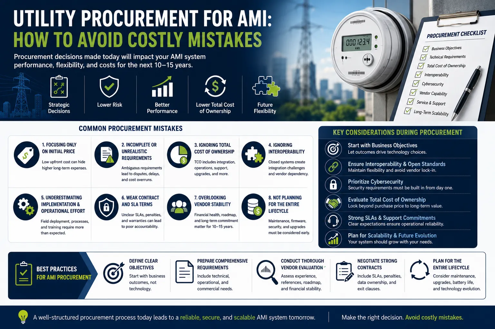
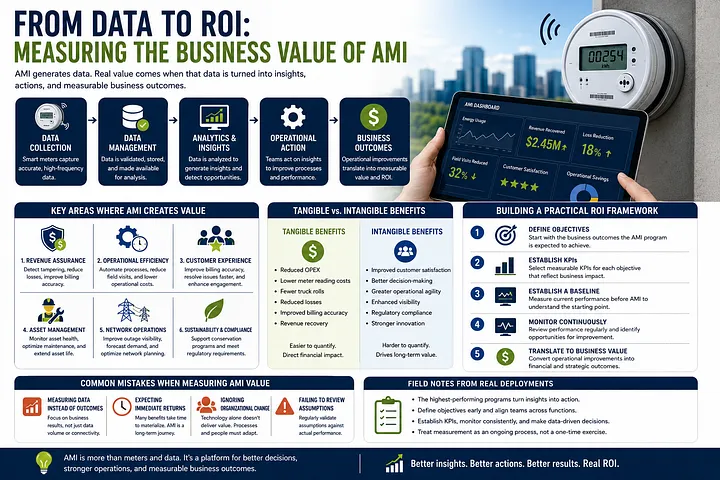
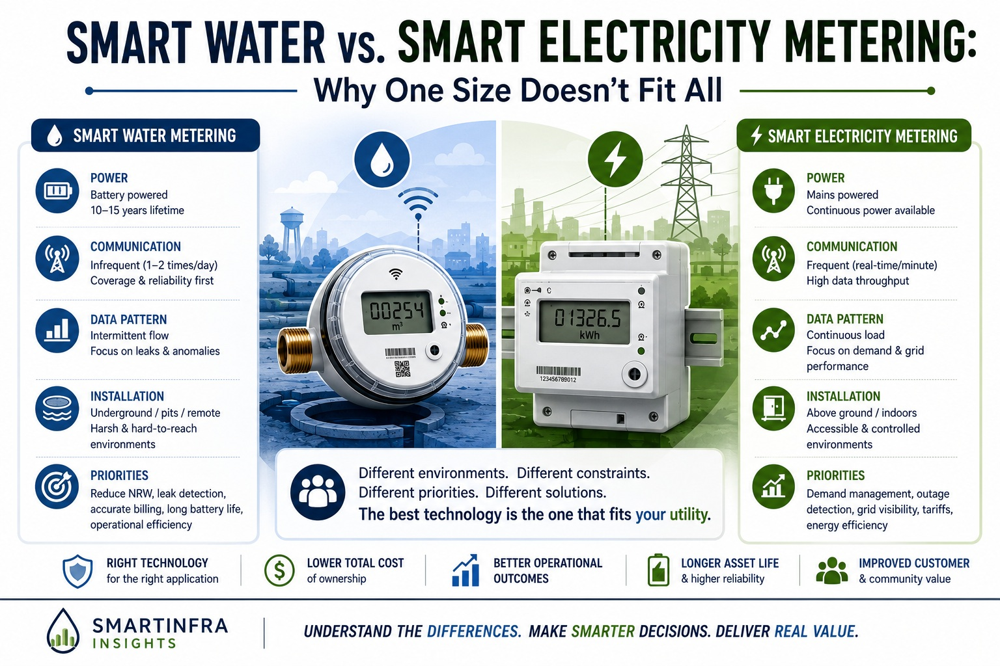
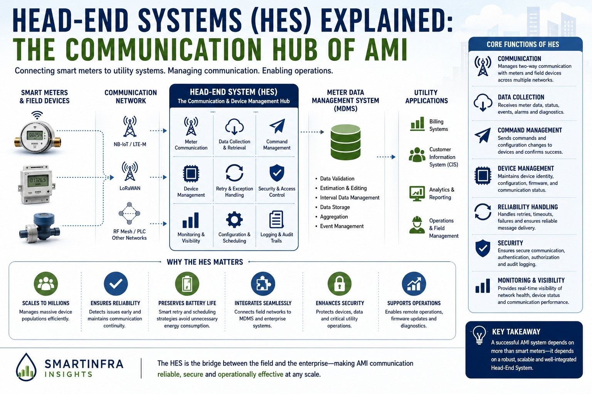

Phase 1: Smart Metering Fundamentals (1–10)
Start here if you are new to smart metering. These articles introduce AMI architecture, communications technologies, system design, and the engineering principles behind successful utility deployments.

What Is Smart Metering? A Practical Guide for Utilities and Smart Cities
An introduction to smart metering technologies, explaining how they differ from conventional meters and the operational, customer service, and sustainability benefits they provide to utilities and smart city programs.
Read on Medium →
NB-IoT vs LoRaWAN vs LTE-M: Choosing the Right IoT Connectivity for Smart Utilities
A practical comparison of leading LPWAN technologies used in utility metering deployments, covering coverage, battery life, scalability, deployment complexity, and long-term operational considerations.
Read on Medium →
Smart Metering in Asia: Challenges, Deployment Lessons, and Real-World Constraints
Examines the unique challenges faced by utilities across Asia, including infrastructure limitations, regulatory differences, communications constraints, and lessons learned from real-world deployments.
Read on Medium →
From Smart Meters to Smart Decisions: How AMI Data Becomes Intelligence for Utilities and Smart Cities
Explains how Advanced Metering Infrastructure transforms raw meter readings into actionable intelligence through analytics, operational insights, leak detection, and data-driven decision making.
Read on Medium →
Why Smart Metering Pilots Fail at Scale — And How Utilities Can Avoid It
Explores why many successful pilot projects encounter difficulties during large-scale rollout and provides practical guidance for planning, governance, operations, and scalability.
Read on Medium →
What Is AMI (Advanced Metering Infrastructure)? Architecture, Components, and How It Works
Provides a comprehensive overview of AMI architecture, including smart meters, communications networks, head-end systems, MDMS platforms, enterprise integration, and operational workflows.
Read on Medium →
AMR vs AMI: Key Differences, Benefits, and When to Use Each
Compares Automated Meter Reading (AMR) and Advanced Metering Infrastructure (AMI), highlighting their technical differences, business value, limitations, and appropriate deployment scenarios.
Read on Medium →
What Is NB-IoT? A Practical Guide for IoT and Smart Metering Deployments
A detailed introduction to Narrowband IoT (NB-IoT), explaining network architecture, coverage characteristics, battery efficiency, deployment considerations, and utility use cases.
Read on Medium →
LoRaWAN Explained: Architecture, Use Cases, and Limitations in Real Deployments
Examines how LoRaWAN networks operate, where they perform well, and the practical limitations encountered during utility, industrial, and smart city deployments.
Read on Medium →
Smart Metering System Architecture: End-to-End Design for Utilities
A system-level view of smart metering architecture, covering devices, communications, head-end systems, MDMS platforms, cybersecurity, integration, and operational management.
Read on Medium →Phase 2: Deployment Reality & Operational Challenges (11–14)
These articles examine what actually happens during real deployments, including battery life, communications performance, cybersecurity, and firmware lifecycle management.

Smart Meter Battery Life Explained: Why 10 Years Is Not Just a Specification
Explains the factors affecting battery performance in smart meters, including reporting frequency, communications technology, environmental conditions, and deployment practices.
Read on Medium →
NB-IoT vs LoRaWAN in Real Deployments: What Actually Happens in the Field
Moves beyond theoretical comparisons to examine the practical realities, trade-offs, and operational experiences of deploying NB-IoT and LoRaWAN in actual field environments.
Read on Medium →
Cybersecurity in Smart Metering: Real Risks, System Weaknesses, and Practical Defenses
Reviews common cybersecurity threats affecting smart metering systems and outlines practical approaches to protecting devices, communications networks, backend systems, and utility operations.
Read on Medium →
Firmware Management in AMI: The Hidden Operational Challenge
Discusses the complexities of managing firmware across large AMI deployments, including testing, version control, remote updates, risk mitigation, and operational governance.
Read on Medium →Phase 3: Utility Leadership & Business Transformation (15–17)
Moving beyond technology, this phase discusses governance, procurement, deployment strategy, and organizational readiness for successful AMI programs.
➔ Related Deep Dive: Read the Executive Whitepaper on ASEAN Project Failures
Why AMI Systems Fail: A System-Level Breakdown (Technology, Data, and Organization)
A practical analysis of why AMI initiatives fail to deliver expected business outcomes despite successful meter deployments. The article identifies critical gaps in system integration, data utilization, operational readiness, and organizational alignment that frequently undermine utility digital transformation programs.
Read on Medium →
Smart Meter Rollout Strategy: Phased vs Full Deployment
A comparison of phased versus full-scale AMI rollouts, analyzing the financial risks, deployment challenges, and key strategies for execution success.
Read on Medium →
Utility Procurement for AMI: How to Avoid Costly Mistakes
A practical framework for drafting technical specifications, aligning vendor SLAs, and structuring multi-vendor evaluation criteria to prevent multi-year vendor lock-in traps and budget overruns during large-scale AMI procurement.
Read on Medium →Phase 4: Business Value & ROI (18–20)
This phase demonstrates how utilities convert raw smart meter telemetry into quantifiable operational improvements, financial savings, and measurable business value prior to advancing into enterprise scale and edge intelligence.

From Data to ROI: Measuring the Business Value of AMI
Translating billions of raw meter telemetry data packets into direct utility balance sheet value, operational expenditure reductions, optimized capital deployment, and measurable non-revenue water (NRW) loss mitigation.
Read on Medium →
How Utilities Actually Use Smart Meter Data (Beyond Billing)
Go beyond simple billing. Discover how modern utilities harness advanced AMI data analytics to optimize grid operations, detect leaks, and improve asset health.
Read on Medium →
Smart Metering Cost & ROI Breakdown: Understanding the True Cost of AMI
Demystify the true cost of AMI. Discover financial frameworks to analyze capital investments, hidden operational expenses, and total ROI for smart grids.
Read on Medium →Phase 5: Utility Technology Leadership (21–30)
This phase explores the advanced communication layers, specialized protocol data structures, and edge intelligence architectures necessary to successfully scale and manage multi-vendor AMI ecosystems.

Smart Water vs. Smart Electricity Metering: Why One Size Doesn't Fit All
Compares the fundamental physics, battery lifecycle profiles, and harsh environmental operational realities that separate constrained water AMI networks from grid-powered electricity smart meters.
Read on Medium →
Head End Systems HES Explained: The Communication Hub of AMI
Demystifying the data acquisition layer responsible for managing multi-protocol meter communication pipelines, connection scheduling, and raw network packet parsing.
Read on Medium →This technical publication series is continuously expanded to reflect evolving smart metering technologies, deployment experiences, and utility best practices. Future articles will explore AI-powered analytics, digital twins, predictive maintenance, advanced communications, and next-generation AMI architectures.